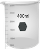
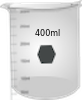

गाइड
1. पावर बटन पर क्लिक करके साधन चालू करें और साधन के आरंभीकरण के लिए 30 मिनट तक प्रतीक्षा करें।
2. पोटेशियम परमैंगनेट के उपयुक्त सांद्रता (जैसे, 0.1 मिमी, 0.5 मिमी और 1.0 मिमी) के तीन जलीय घोल तैयार करें। इस आभासी प्रयोगशाला प्रयोग में, माप के लिए समाधान का चयन करने के लिए एकाग्रता बार पर क्लिक करें और खींचें। सबसे कम एकाग्रता समाधान के साथ शुरू करें। (क्यों?)
3. साफ, सूखे बीकर लेने के लिए बीकर पर क्लिक करें।
4. स्वच्छ, सूखे बीकर में घोल डालने के लिए वॉल्यूमेट्रिक फ्लास्क पर क्लिक करें।
5. बीकर से उचित मात्रा में घोल एकत्र करने के लिए माइक्रोप्रिपेट पर क्लिक करें।
6. उस पर क्लिक करके एक क्युवेट लें।
7. micropipette से क्युवेट पर क्लिक करके घोल में घोल डालें। (वास्तविक माप में, क्युवेट इसकी मात्रा के लगभग दो-तिहाई से भरा है।)
8. इसे खोलने के लिए स्पेक्ट्रोफोटोमीटर के ढक्कन पर क्लिक करें।
9. नमूना धारक में रखने के लिए क्युवेट पर क्लिक करें। इस माप में नमूने के रिक्त या संदर्भ के रूप में पानी का उपयोग करना होता है। यहाँ एक डबल बीम स्पेक्ट्रोफोटोमीटर दिखाया गया है। इस मामले में, नमूना नमूना धारक और नमूना बैंक या संदर्भ धारक में संदर्भ को एक साथ रख सकता है।
10. कंप्यूटर मॉनिटर और फिर स्कैन बटन पर क्लिक करके वेवलेंथ स्कैन को चलाएं और वेवलेंथ स्कैन का निरीक्षण करें। वास्तविक स्पेक्ट्रोफोटोमीटर ऑपरेशन में, नमूना के लिए घटना प्रकाश की एक उपयुक्त तरंग दैर्ध्य रेंज को चुना जा सकता है और तरंग दैर्ध्य स्कैन कंप्यूटर सॉफ्टवेयर के माध्यम से चलाया जाता है। एक स्कैन को अवशोषकता या संप्रेषण मोड में चला सकता है। स्कैन डेटा को कंप्यूटर में फ़ाइल नाम के साथ संग्रहित किया जाता है। यदि स्पेक्ट्रोफोटोमीटर एक एकल बीम उपकरण है, तो पहले नमूना रिक्त या संदर्भ एक क्यूवेट में लिया जाता है और नमूना के बाद तरंग दैर्ध्य स्कैन चलाया जाता है। संबंधित तरंगदैर्ध्य के लिए नमूना डेटा से संदर्भ डेटा को घटाना है।
11. नया माप शुरू करने के लिए रीसेट बटन पर क्लिक करें।
12. अगले उच्च एकाग्रता और इतने पर साथ माप मापें।
13. डेटा टैब पर क्लिक करके सभी डेटा हटाएं।
14. विभिन्न सांद्रता के लिए विभिन्न तरंग दैर्ध्य पर नमूने के शोषक डेटा को समायोजित करें और अधिकतम अवशोषण यानी वर्णक्रमीय चोटी के पदों की तरंग दैर्ध्य निर्धारित करें।
15. एक विशेष तरंग दैर्ध्य (जैसे, 525 एनएम) बनाम एकाग्रता के लिए अवशोषक मानों का पता लगाएं और रैखिक प्रतिगमन की गणना करें।
16. दो अन्य तरंग दैर्ध्य कहते हैं, 545 एनएम और 570 एनएम के लिए अवशोषण मूल्यों बनाम एकाग्रता के प्लॉटिंग को दोहराएं और रैखिक प्रतिगमन की गणना करें।
17. उपरोक्त तीन तरंग दैर्ध्य के लिए अवशोषण मूल्यों बनाम एकाग्रता के स्थान पर संप्रेषण लेने वाले समान तीन भूखंडों का निर्माण करें और रैखिक प्रतिगमन की गणना करें।
18. बीयर कानून का अवलोकन करें कि क्या अवशोषण और संप्रेषण मूल्यों में एकाग्रता के साथ रैखिक सहसंबंध है या नहीं।
19. किसी दिए गए तरंग दैर्ध्य के लिए इसी एकाग्रता द्वारा अवशोषण डेटा को विभाजित करके 1 मिमी एकाग्रता के लिए अवशोषण माप को सामान्य करें। किसी दिए गए तरंग दैर्ध्य पर सामान्यीकृत डेटा (प्रायोगिक त्रुटि के भीतर) एकाग्रता-विशिष्ट हैं? अपने परिणामों पर चर्चा करें।

 
